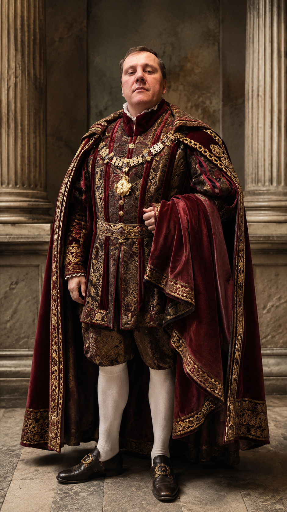

Project card
Iolanta / Perséphone
14 · 2016
Opéra de Lyon
Проект
Iolanta / Perséphone - Tchaikovsky / Stravinsky
Партия
Robert
Театр и даты
Opéra de Lyon, Lyon, France. May 2016
Дирижёр
Martyn Brabbins
Режиссёр / постановка
Peter Sellars
Художники / production team
Set: George Tsypin; Costumes: Martin Pakledinaz; Lighting: James F. Ingalls; Orchestra/Chorus: Opéra de Lyon.
Статус проверки
Подтверждено рецензиями. Важно: Лион - Brabbins; Currentzis относится к Teatro Real/Aix.